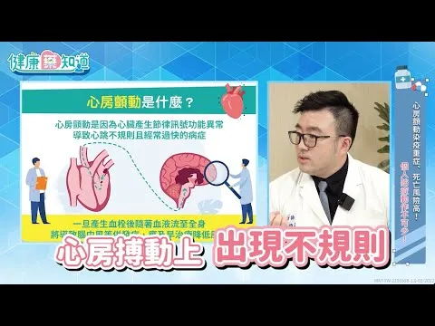
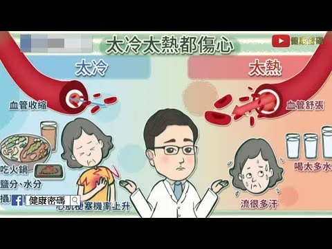

今健康：心房顫動／COVID-19
2022-03-30・6:49
心臟的事，
慢慢說給您聽。
專精心臟電生理：心房顫動電燒、脈衝場消融、無導線節律器；同時參與撰寫心腎症候群、肥胖與高血壓的學會指引。門診時，我會把心電圖攤開，畫給您看是哪裡亂了、哪裡慢了，再一起決定怎麼治療。
 心跳怪怪的？先做 1 分鐘小檢查 →
心跳怪怪的？先做 1 分鐘小檢查 →


心跳太慢、醫師建議裝節律器時，很多人第一個問題是：要裝哪一種？這裡用一支影片和三張圖解，把心臟的電路、節律器怎麼幫忙、有導線和無導線差在哪說清楚。
進去看節律器衛教專區聯合報元氣網中央社照護線上泛科學工商時報自由時報TVBS 健康2.0ETtoday今健康Heho 健康早安健康健康醫療網優活健康網環宇廣播電台
新竹馬偕紀念醫院心臟內科資深主治醫師，看診以心律不整與心臟電生理為主：心房顫動導管消融、無導線節律器、植入式心臟節律治療，也做複雜性心導管、頑固型高血壓的腎動脈交感神經電燒。平常在臉書粉絲專頁「一千個傷心的理由」用白話寫心臟的事；這個心臟小園地把所有文章收在一起，方便您收藏、慢慢看。

2022-03-30・6:49

2021-12-27・6:50

2021-11-19・4:18

2019-04-26・7:33
桃竹苗就近看診：#桃園#中壢#楊梅#新屋#龍潭#新竹市#竹北#竹東#湖口#新豐#寶山#芎林#竹南#頭份#苗栗